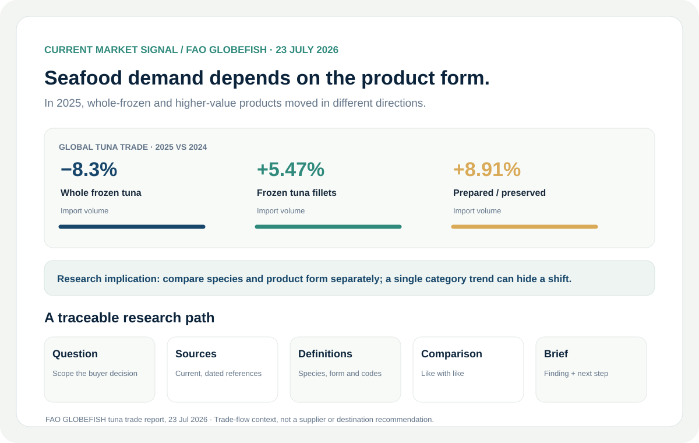

The challenge
Research becomes difficult to use when definitions, dates and source confidence are separated from the findings.
Turn scattered market information into a sourced view that supports a real business decision.

Research becomes difficult to use when definitions, dates and source confidence are separated from the findings.
Structured source and citation registers, variable definitions, observation files and market comparison workflows.
Define the question and scope, connect claims to sources, organize comparable fields, then make uncertainty visible.
Selected research material includes A current FAO GLOBEFISH tuna trade signal, connected to a transparent research workflow and EEMEI’s source structure.
Helps teams review the evidence behind a comparison and decide what to verify next.
Read the FAO GLOBEFISH market update ↗